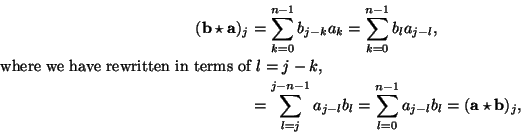
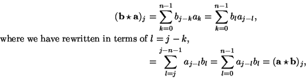

Next: Properties of the Fourier
Up: The Fast Fourier Transform
Previous: The Fourier Matrix
Contents
Index
Products
We have seen that the discrete Fourier transform is defined on
 .
In addition to being a vector space,
becomes a commutative ring
when a ``pointwise'' product is defined in the obvious way for
a and b in
by
.
In addition to being a vector space,
becomes a commutative ring
when a ``pointwise'' product is defined in the obvious way for
a and b in
by
a.b = (a1, a2,..., an).(b1, b2,..., bn) = (a1b1, a2b2,..., anbn).
There is however another product, the convolution
product on
which is natural from a different viewpoint. For
a and b
in
, define
 by
by
(
ab)
j =
 aj - kbk
aj - kbk,
 , the cyclic abelian group with addition
mod n, as we did in the definition of the discrete Fourier
transform. Let 1k be the function on
, the cyclic abelian group with addition
mod n, as we did in the definition of the discrete Fourier
transform. Let 1k be the function on
 which takes the value
0 except at the integer k, where it takes the value 1. A
natural way to define 1j.1k is as 1j + k, where we interpret
j + k modulo n. This extends by linearity to the whole of
;
it is easy to check that the resulting product is the convolution just
defined.6.2Convolution makes
into a (commutative) ring; it is easy to
verify that convolution is an associative product. It is commutative
since

which takes the value
0 except at the integer k, where it takes the value 1. A
natural way to define 1j.1k is as 1j + k, where we interpret
j + k modulo n. This extends by linearity to the whole of
;
it is easy to check that the resulting product is the convolution just
defined.6.2Convolution makes
into a (commutative) ring; it is easy to
verify that convolution is an associative product. It is commutative
since

since we can sum over
in any order.
Next: Properties of the Fourier
Up: The Fast Fourier Transform
Previous: The Fourier Matrix
Contents
Index
Ian Craw
2001-04-27